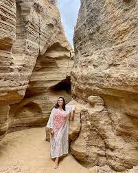

Introduction – The Real Heart of Agadir Lies Inland
Most visitors to Agadir never venture beyond the corniche, the resort hotels, and the bustling tourist areas. But what awaits just inland and along the coastal road to Essaouira is something far more valuable than another beach photo—it's the living, breathing culture of Morocco's indigenous Berber people.
The Berber villages around Agadir—places like Tamri and Taghazout—aren't tourist attractions. They're working communities where families maintain traditions passed down through generations: growing bananas, producing Argan oil, fishing the Atlantic, and preserving a way of life that predates the modern tourism industry by centuries. This is where you'll find the authentic Morocco that doesn't exist in hotel lobbies or souvenir shops.
Meet the Berbers – Morocco's Indigenous People
The Berbers (or Amazigh, as they call themselves) are North Africa's indigenous people—a distinct cultural and ethnic group with their own language, traditions, and history that predates the Arab conquest by over a thousand years. Across Morocco, over 40% of the population is Berber, and in the Souss-Massa region around Agadir, this heritage is especially strong and visible.
Berber culture is characterized by deep connection to land, community-centered living, remarkable hospitality, and traditions that have been preserved despite centuries of outside influence. When you visit a Berber village, you're not just seeing another tourist destination—you're stepping into a cultural world that has survived empires, occupations, and the rapid changes of the 21st century.
The Berber Identity in Modern Morocco
In the coastal villages around Agadir, Berber identity manifests in everyday ways:
- Language: Tamazight (Berber) is spoken alongside Arabic, often as the primary tongue at home and in village markets
- Traditional Clothing: Older women still wear distinctive Berber jewelry and patterns, representing Amazigh identity and cultural pride
- Handicrafts: Pottery, weaving, and metalwork techniques passed down through families for generations
- Community Values: Collective support, respect for elders, and hospitality toward guests as sacred duties
- Connection to Nature: Traditional agriculture, fishing, and crafts that depend on understanding local ecosystems
Tamri Village: The Land of Bananas & Argan Oil
Located approximately 32 kilometers north of Agadir along National Route 1, Tamri is a coastal Berber village that feels like stepping into another era. This is Morocco's banana-growing capital, where terraced plantations cascade down toward the Atlantic, and traditional life continues largely as it has for generations.
What makes Tamri special isn't just its stunning location or agricultural success—it's the authentic Berber community that calls it home. Here, you'll meet families who have tended the same banana groves for decades, women who produce Argan oil using traditional stone grinding methods, and artisans who create pottery and crafts using techniques unchanged for centuries.
Experiencing Tamri: A Day in the Village
When you visit Tamri with our local guides, you'll experience authentic Berber village life through several immersive activities:
Banana Plantation Walk: Start your morning with a guided walk through Tamri's famous banana terraces. You'll learn about local agriculture, see the irrigation systems that make banana cultivation possible, and taste fruit straight from the tree. Your guide will explain how bananas became central to Tamri's economy and identity.
Argan Oil Cooperative Visit: Visit a women's cooperative where you'll witness the traditional Argan oil production process. Women will demonstrate how they crack the hard Argan nuts, grind the kernels by hand, and press the oil using age-old techniques. This isn't a show—it's real daily work that empowers local women economically while preserving ancestral traditions.
Traditional Mint Tea Ceremony: In a local family's home, you'll participate in the traditional tea ceremony, learning how to prepare mint tea the Berber way. Your hosts will share stories about village life, family history, and how Tamri has evolved from a small fishing settlement into a thriving agricultural community while maintaining its cultural identity.
Local Market Exploration: Explore Tamri's vibrant weekly market where local farmers and artisans sell everything from fresh produce to handmade crafts. This is where villagers from surrounding areas gather to trade, socialize, and catch up on community news. With your guide's help, you'll learn to distinguish authentic Argan oil from commercial imitations and find handcrafted souvenirs that support local families directly.
The Story Behind Tamri's Bananas
Tamri's banana production isn't just agriculture—it's a story of community resilience and adaptation. The unique microclimate created by the nearby Oued Tamri river and the influence of the Atlantic Ocean creates perfect conditions for banana cultivation. Local Berber families transformed challenging terrain into productive terraces through generations of hard work and knowledge passed down from parents to children.
Today, the banana groves aren't just economic assets—they're symbols of Berber cultural continuity, representing the ability to thrive in challenging environments while maintaining traditional values and community bonds. When you walk through the groves with a local guide, you're walking through living history and experiencing the deep connection between Berber culture and the land.
Taghazout & Tamraght – Surf, Crafts & Community
Just 18 kilometers north of Agadir lies Taghazout—a Berber fishing village that has become a world-renowned surf destination while preserving its traditional character. Here, you can see how ancient Berber culture coexists with modern international visitors, creating a unique cultural blend that's fascinating to experience.
Taghazout offers a perfect example of how Berber communities can embrace tourism while maintaining cultural integrity. The village's narrow streets, white-washed houses, and traditional architecture remain intact despite the surf shops, cafés, and guesthouses that have grown alongside them. Berber residents work in hospitality, crafts, and fishing—traditional occupations adapted to serve both local and international communities.

Exploring Taghazout's Dual Identity
On a cultural tour of Taghazout, you'll experience fascinating contrasts:
- Traditional Fishing: Meet Berber fishermen who continue age-old fishing methods, often departing before dawn and returning with fresh catch
- Modern Surf Culture: Understand how international surf culture has been adapted to coexist with local traditions
- Berber Craftsmanship: Visit workshops where artisans create traditional pottery, metalwork, and textiles using ancient techniques
- Community Spaces: Experience local cafés where Berber men gather for mint tea and conversation, maintaining social bonds that are central to Amazigh culture
- Cooperative Initiatives: Learn about community projects that empower women through handicraft cooperatives and Argan oil production
Just down the road lies Tamraght, another traditional Berber village where the surf scene integrates seamlessly with local life. Here, you can experience the harmony between international tourism and traditional Berber hospitality, seeing firsthand how these communities have embraced visitors while maintaining their cultural core.
Hospitality & Berber Cuisine
Perhaps the most profound experience in a Berber village is sharing a meal with a local family. Berber hospitality isn't performative tourism—it's genuine care for guests rooted in centuries of tradition. When you're invited into a family home for lunch, you're not just eating food—you're participating in rituals of generosity, connection, and cultural exchange that define Amazigh identity.
Traditional Berber meals in Tamri, Taghazout, or other coastal villages typically include:
- Tagine: Slow-cooked stew with meat, vegetables, and aromatic spices, the quintessential Moroccan dish prepared with local Berber techniques
- Fresh Bread: Baked in communal ovens, essential to every meal and shared family-style
- Couscous: The national dish, prepared with local ingredients and served on special occasions or to honor guests
- Moroccan Salads: Fresh vegetable salads seasoned with local herbs and Berber spices
- Argan Oil Tastings: Both culinary and cosmetic Argan oil, often pressed by the women in the cooperative you'll visit
- Mint Tea: The ceremony you'll participate in, preparing tea with proper Berber techniques
The Art of Berber Hospitality
When you visit Berber families in the villages around Agadir, you'll experience hospitality rooted in ancient traditions:
Guest as Honor: In Berber culture, guests are considered gifts from God. Families will serve you repeatedly, showing generosity and care that may feel overwhelming to Western visitors but represents genuine affection and cultural values.
Stories and Connection: Meals are social events where family histories, cultural knowledge, and personal stories are shared. Your hosts will ask about your life, your family, and your country—genuine interest in connection, not just polite conversation.
Modesty and Respect: Berber hospitality values modesty. Expressing gratitude, refusing additional food only when truly full, and showing genuine interest in family life all demonstrate respect for your hosts' generosity.
Book Your Berber Village Experience
Ready to move beyond Agadir's beaches and experience authentic Berber culture? Our carefully designed village tours take you into the heart of Tamri, Taghazout, and surrounding coastal communities where families have lived for generations.
Discover Berber Villages
Join our expert local guides for an immersive journey into Tamri, Taghazout, and surrounding Berber communities. Experience authentic culture, meet local families, and discover the real Morocco that exists beyond the tourist zones.
Book Your Village Tour →What's Included in Your Tour
- ✅ Comfortable hotel pickup and drop-off in air-conditioned vehicle from Agadir
- ✅ Professional Berber-speaking local guide who understands cultural context and can facilitate authentic interactions
- ✅ Visit to Tamri village with banana plantation walk and agricultural insights
- ✅ Visit to women's Argan oil cooperative with live demonstration of traditional production
- ✅ Traditional mint tea ceremony in a local family home
- ✅ Authentic lunch with a Berber family featuring local cuisine and recipes
- ✅ Exploration of local markets and artisan workshops
- ✅ Visit to Taghazout for cultural insights and community interaction
- ✅ Opportunity to purchase authentic Argan oil, crafts, and souvenirs with local pricing guidance
- ✅ Maximum group size of 8 people for an intimate, respectful experience
Related Tours & Experiences
After discovering Berber villages, continue your authentic Morocco journey with these complementary experiences:
- Quad Biking Adventures: Explore the stunning landscapes around Agadir, including desert dunes and coastal views where Berber communities have lived for centuries
- Sandboarding Tours: Experience the natural playgrounds near Berber villages with thrilling sandboarding adventures
- Camel Riding: Experience the desert landscapes and coastal dunes that Berber nomads have traversed for millennia
- Paradise Valley: Journey into the Atlas Mountains to natural swimming pools where Berber traditions thrive
- Complete Agadir City Tour: Combine village experiences with city exploration, understanding how modern and traditional Morocco coexist
Frequently Asked Questions
Conclusion: Finding the Real Morocco
Agadir's beaches are beautiful, but the real treasures of Morocco lie in the Berber villages just beyond—places like Tamri, Taghazout, and the surrounding coastal communities where ancient traditions thrive alongside modern life. This is where you'll find the authentic Morocco you've been searching for: genuine hospitality, traditional crafts, family bonds that span generations, and cultural experiences that transform vacation photos into lasting memories.
Visiting Berber villages isn't just about cultural tourism—it's about human connection, mutual respect, and understanding that the real Morocco isn't confined to hotel zones or tourist attractions. It exists in the family homes where tea ceremonies happen daily, in the cooperatives where women preserve ancient crafts, in the banana groves that families have tended for generations, and in the warm welcome you'll receive from hosts who see guests as honored visitors.
The Berber people around Agadir have maintained their identity, language, and traditions despite centuries of change. When you visit their villages with an open heart and respectful curiosity, you're not just observing a culture—you're participating in a living tradition of hospitality, craftsmanship, and community that represents one of humanity's oldest forms of human connection.
Ready to discover the Berber villages around Agadir? Book your cultural experience today and step into a world where ancient traditions meet genuine hospitality. The journey beyond the beach awaits, and the villages of Tamri and Taghazout are waiting to welcome you.